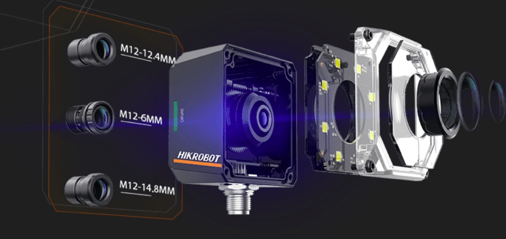

セレクトニュース(3選)
1.【標準化】 ロボット×非接触カメラの「新JIS規格」が制定 (2026/03)
日本規格協会は、産業用ロボットとカメラを組み合わせた「自動三次元測定システム」の精度評価規格（JIS B 7446-1）を新設しました。
なぜ重要か：
- 導入の「共通ものさし」が誕生： 検査精度を第三者視点で客観評価できるようになり、現場の自動化シフトを後押しします。
- 投資判断のハードルが低下： 人手不足を背景とした「目視から全数自動検査への移行」において、設備選定のリスクを最小化できます。
2.【現場課題】 AI検査の落とし穴：過多検出による「目視への逆戻り」 (2025/06)
日本AI技術普及開発機構（JAIX）の調査で、AI導入後に良品の誤判定（過多検出）が頻発し、度重なるチョコ停に耐えかねて目視検査へ戻る現場の実態が判明しました。
なぜ重要か：
- PoCと実ラインのギャップ： 実験室で高精度でも、現場の「外来光」や「ワークの姿勢ブレ」に耐えられない現実を示しています。
- 投資判断の視点を転換： モデル単体の精度ではなく、環境変化を吸収できる「現場適応型のシステム設計」こそが成否を分ける警鐘です。
3.【現場課題・省力化】 MENOU：AI×AFで「品種切替の段取り」を自動化 (2026/08)
株式会社MENOUは、多品種少量ラインで発生するピント調整や視点切り替えの手間を、AIとオートフォーカス（AF）の融合により自動化する技術を発表しました。
なぜ重要か：
- 最大のボトルネックを排除： ワーク変更ごとの「カメラ位置調整」や「パラメータ再設定」の手間を自動化します。
- 多品種ラインのROIを劇的改善： 段取り負荷を理由に全数自動検査を諦めていた現場でも、費用対効果に見合う導入が可能になります。
ピックアップ製品・ソリューション
Hikrobot ID3000シリーズ
3.1MP × 液体レンズ × Deep Learningが実現する「止めない」超高速コード読取

なぜ重要か：
- チョコ停と段取り替えを同時にゼロ化： 液体レンズの超高速AFとエッジAIを統合。環境光の変動や多品種混流によるライン停止を根本から解決します。
現場課題への解決アプローチ：
- 難読・反射コードの誤検知を根絶： 自動偏光と組み込みAIにより、DPM（直接刻印）や擦れ・歪みのあるコードも安定判定。
- 高さ変動にも瞬時合焦： メカ駆動部を持たない16mm液体レンズが電気的にピントを追従。品種切替の手動セットアップを全廃。
- 全数トレーサビリティの標準化： 3.1MP高解像度とコンパクト設計で、新JISを見据えた装置・ロボットへのOEM組み込みが容易。
| メーカー / 型式 |
Hikrobot / ID3000 シリーズ Smart Code Reader |
| 解像度 / センサ |
3.1MP（最大2048 × 1536 ピクセル） |
| 光学 / レンズ |
16mm 液体レンズ（電気的・超高速オートフォーカス対応） |
| 処理アルゴリズム |
ディープラーニング（Deep Learning）専用SoC内蔵 |
| 照明・光学制御 |
モジュール式照明、自動偏光（Auto Polarization）、調光制御 |
| 機構 / 接続 |
超小型設計、単一配線対応の航空コネクタ採用 |